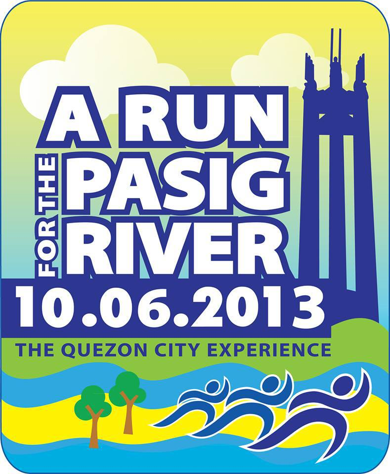
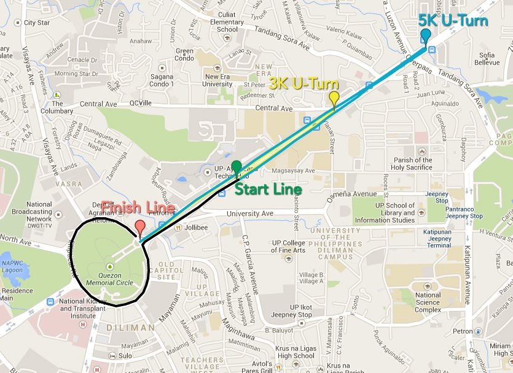

ABOUT RUN FOR THE PASIG RIVER
The Run for the Pasig River is organized by ABS-CBN Foundation to promote awareness and generate funds for Kapit Bisig Para Sa Ilog Pasig – a multi-sectoral project working on the rehabilitation of the Pasig River and its tributaries. Now on its fifth year, the annual event helped raise PHP 25.94 million, which was used in the rehabilitation of Estero de Paco, River Warriors leadership training and community-based information campaigns. Through the Run for the Pasig River, the ABS-CBN Foundation was able to gather public support for Pasig River, mobilizing thousands of participants from schools, businesses, government agencies and families. In 2010, the 10.10.10 Run for the Pasig River recorded 116,086 participants, breaking the Guinness World Record for the most number of participants in a running event. The 2011 and 2012 editions of the Run for the Pasig River, meanwhile, gathered over 86,000 and 70,000 participants, respectively.
This year, the Run for the Pasig River will be part of “Mga Kuwento ng Kasiyahan: The Grand Kapamilya Weekend,” an event celebrating ABS-CBN’s 60th anniversary on television. It is also one of the simultaneous running events in “One Run, One Philippines,” which also features four other locations: Cebu, Davao, Bacolod and Los Angeles.
Event Information: Quezon City
Race Categories
- Morning Madness Run (3KM / 5KM)
- Assembly: 5:00AM
- Gunstart: 6:00AM
Registration Fees
- Regular - Morning Madness Run (3KM / 5KM): P 300.00
- Student - Morning Madness Run (3KM / 5KM): P 150.00
Race Packet
Contains Race bib, race information (rules and regulations, route map), BayaNiJuan keychain.
Retail Registration
The race packets are available in the following retail outlets:
Run for the Pasig River booths in:
- SM North EDSA
- SM Megamall
- SM Mall of Asia
Chris Sports outlets in:
- Glorietta
- Festival Mall
- SM North EDSA Annex
- SM Megamall
- SM Manila
- SM Fairview
- Fitness & Athletics Bonifacio Global City
Bib Activation
Once you purchase your race packet, we remind you to go back to www.onerunonephilippines.com to activate your bib so you can retrieve your online finisher’s certificate which you may download from the website after the Run.
Water Stations
There will be water stations along the route, but no paper or plastic cups to minimize waste production for the event. Participants should bring their own water bottles.
Contact Information
For more information about the Run for the Pasig River, contact us at 4152272 local 3797 or 4161911. You can also visit our website: www.onerunonephilippines.com.
Map
The 10.06.2013 Run for the Pasig River will take place on 6 October 2013 at the Quezon Memorial Circle. Participants of the run’s main event – 3/5KM Morning Madness – will assemble along Elliptical Road before running down Commonwealth Avenue and finishing the run at the Quezon Memorial Circle. The starting time for the run is at 6:00AM.
